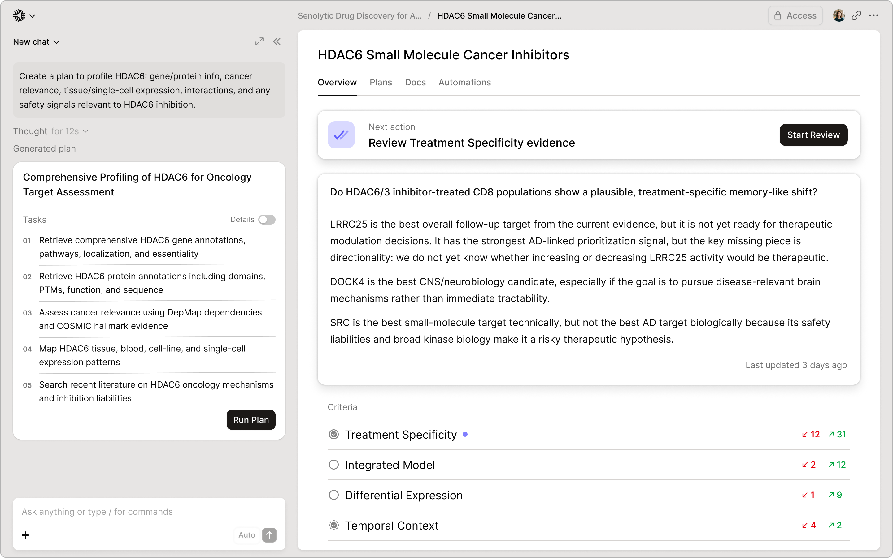

I’m Shane, a product designer based in Wirral. I was most recently Founding Designer at Kiin Bio, where I focused on crafting powerful, elegant experiences for scientists.
I spend my off-hours working on DIY home projects and visiting National Trust sites.
You can find me on LinkedIn or reach out at
Experience
Kiin Bio Founding Designer
2025 ∙ 2026
Designing and building AI-powered interfaces, working across UI development, design, and product direction.
- Designed data-intensive web interfaces and interactive dashboards for an AI-guided platform, featuring execution timelines and experiment workspaces.
- Defined product strategy and UX foundations from the ground up for early-stage platform initiatives.
- Built high-fidelity front-end prototypes using Claude Code, React, and Tailwind CSS for rapid validation.
Lifebit Lead Product Designer
2021 ∙ 2025
Leading product design and design systems for complex genomic analytics platforms used by global biomedical researchers.
- Facilitated end-to-end user research to translate customer feedback into core platform improvements.
- Maintained the Figma design system and synchronized UI components with engineering teams via Storybook.
- Collaborated daily with PMs and engineering squads to align design requirements with technical execution.
Co-op Bank UX Design Manager
2018 ∙ 2021
Directing UX strategy and digital product design across mobile and web banking applications for millions of customers.
- Served as Lead Designer for the Open Banking rollout, designing end-to-end consent and authentication journeys.
- Founded and scaled the bank's design system ("Daly") across Figma, Bitbucket, and Storybook.
- Embedded WCAG accessibility standards into design tokens and component guidelines across all products.
Paperkite Senior Interaction Designer
2015 ∙ 2018
Designed high-impact mobile ordering and payment experiences for enterprise clients.
- Designed mobile features for the BPMe app, enabling in-vehicle fuel payments for 500,000+ users.
- Led product design for the Hell Pizza mobile app, translating brand identities into native ordering interfaces.
- Conducted usability testing and iterative prototyping across native iOS and Android platforms.
JTB Studios Designer & Front-end Dev
2012 ∙ 2015
Designed and developed responsive web applications and interactive digital experiences for diverse client projects.
- Built custom front-end interfaces using HTML, CSS, and JavaScript.
- Created wireframes, visual designs, and interactive client prototypes.
- Collaborated closely with developers to deliver production-ready assets.
Work

Product & Interaction Design for KiinOS
Kiin Bio ∙ Specialized peptide design research workspace for discovery biologists.

Information Architecture & Systems Design
Lifebit ∙ Redesigning genomic platform navigation and object hierarchy using Object-Oriented UX and systems thinking.
Digital Strategy & Design System
Co-op Bank ∙ Consolidated digital banking channels and modernised legacy mobile and web journeys.